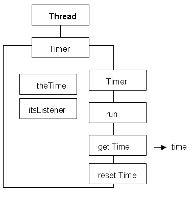

Java provides support for the construction and control of threads which is simpler and more straight forward than practically any other programming language. The initiation and co-ordination of a thread is a very complex task, but the java.lang.Thread class is provided and takes care of all these details. In order to produce a class which can be executed as a thread the Thread class can be extended and all of this functionality inherited.
To illustrate a concurrent process a class called Timer will be designed and developed. This class is intended to provide an (inaccurate!) timing facility accurate to one tenth of a second. Once the Timer thread is started it runs continually incrementing the value of an encapsulated int attribute (approximately) every tenth of a second. A client of this class can use an inquiry action (called getTime()) to find out how many tenths of a second have elapsed since the thread was started. The class diagram of the Timer class is as follows:

The int attribute theTime is used to count the number of seconds and is set to zero upon construction and when resetTime() is called. The inquiry action, getTime() returns the value of this attribute; the run() action will be explained on the next page.
The implementation of this class, omitting the run() action, is as follows.
0001 // Timer.java.
0002 // Initial example of a threaded class.
0003 // Produced for waypoint 5.
0004 //
0005 // Fintan Culwin, v0.1, March 1998.
0006
0007
0008 public class Timer extends Thread {
0009
0010 private int theTime =0;
0011
0012 public Timer() {
0013 super();
0014 theTime =0;
0015 } // End Timer constructor.
0028
0029
0030 public int getTime() {
0031 return theTime;
0032 } // End getTime;
0035 public synchronized void resetTime() {
0036 theTime =0;
0037 } // End getTime;
0038 } // End Timer.
The only ways in which this class differs from other similar classes which have been used in previous waypoints is that it is declared as extending the Thread class on line 0008 and on line 0035 the resetTime() method is declared with the synchronized modifier. This modifier makes sure that, in a muti-threaded environment, only one of the threads can reset the Timer at any instant and no other methods of the class can be used until it has finished. In general any action which changes the value of any attribute in a threaded class should be declared synchronized in order to ensure that they do not interfere with each other.